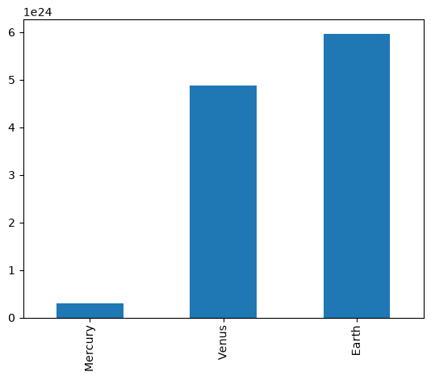
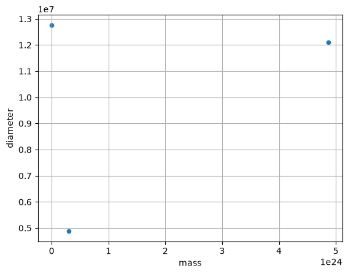
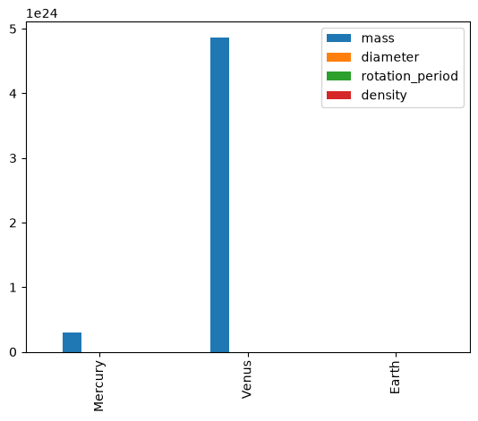
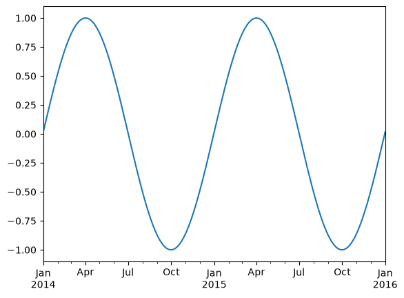
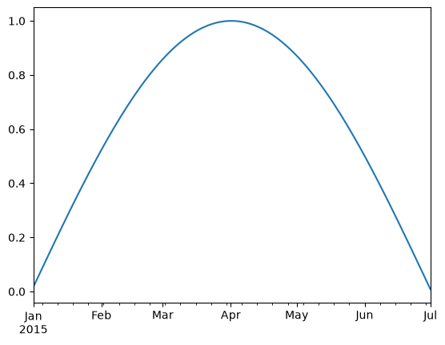
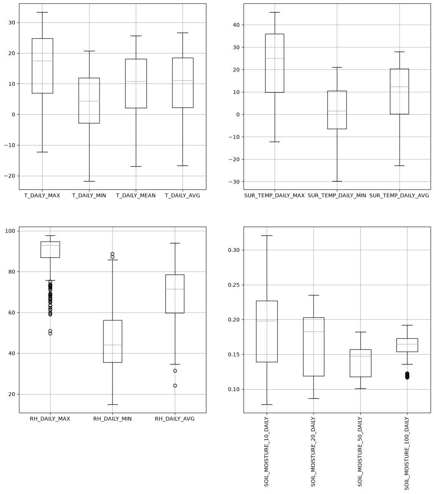
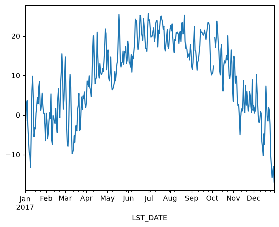
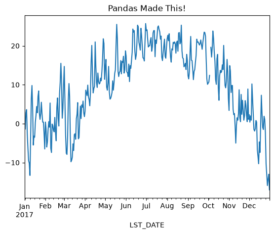
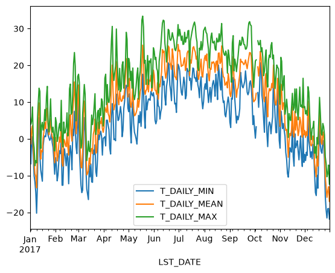
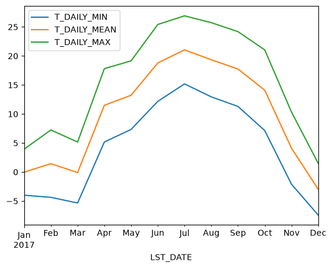

Pandas Fundamentals#
import pandas as pd
import numpy as np
from matplotlib import pyplot as plt
%matplotlib inline
Pandas Data Structures: Series#
A Series represents a one-dimensional array of data. The main difference between a Series and numpy array is that a Series has an index. The index contains the labels that we use to access the data. This can be useful.
There are many ways to create a Series. We will just show a few.
(Data are from the NASA Planetary Fact Sheet.)
names = ['Mercury', 'Venus', 'Earth']
values = [0.3e24, 4.87e24, 5.97e24]
masses = pd.Series(values, index=names)
masses
Mercury 3.000000e+23
Venus 4.870000e+24
Earth 5.970000e+24
dtype: float64
Series have built in plotting methods.
masses.plot(kind='bar')
<Axes: >

Arithmetic operations and most numpy function can be applied to Series. An important point is that the Series keep their index during such operations.
np.log(masses) / masses**2
Mercury 6.006452e-46
Venus 2.396820e-48
Earth 1.600655e-48
dtype: float64
We can access the underlying index object if we need to:
masses.index
Index(['Mercury', 'Venus', 'Earth'], dtype='str')
Indexing#
We can get values back out using the index via the .loc attribute
masses.loc['Earth']
np.float64(5.97e+24)
Or by raw position using .iloc
masses.iloc[2]
np.float64(5.97e+24)
We can pass a list or array to loc to get multiple rows back:
masses.loc[['Venus', 'Earth']]
Venus 4.870000e+24
Earth 5.970000e+24
dtype: float64
And we can even use slice notation
masses.loc['Mercury':'Earth']
Mercury 3.000000e+23
Venus 4.870000e+24
Earth 5.970000e+24
dtype: float64
masses.iloc[:2]
Mercury 3.000000e+23
Venus 4.870000e+24
dtype: float64
If we need to, we can always get the raw data back out as well
masses.values # a numpy array
array([3.00e+23, 4.87e+24, 5.97e+24])
masses.index # a pandas Index object
Index(['Mercury', 'Venus', 'Earth'], dtype='str')
Pandas Data Structures: DataFrame#
There is a lot more to Series, but they are limit to a single “column”. A more useful Pandas data structure is the DataFrame. A DataFrame is basically a bunch of series that share the same index. It’s a lot like a table in a spreadsheet.
Below we create a DataFrame.
# first we create a dictionary
data = {'mass': [0.3e24, 4.87e24, 5.97e24], # kg
'diameter': [4879e3, 12_104e3, 12_756e3], # m
'rotation_period': [1407.6, np.nan, 23.9] # h
}
df = pd.DataFrame(data, index=['Mercury', 'Venus', 'Earth'])
df
| mass | diameter | rotation_period | |
|---|---|---|---|
| Mercury | 3.000000e+23 | 4879000.0 | 1407.6 |
| Venus | 4.870000e+24 | 12104000.0 | NaN |
| Earth | 5.970000e+24 | 12756000.0 | 23.9 |
Pandas handles missing data very elegantly, keeping track of it through all calculations.
df.info()
<class 'pandas.DataFrame'>
Index: 3 entries, Mercury to Earth
Data columns (total 3 columns):
# Column Non-Null Count Dtype
--- ------ -------------- -----
0 mass 3 non-null float64
1 diameter 3 non-null float64
2 rotation_period 2 non-null float64
dtypes: float64(3)
memory usage: 113.0 bytes
A wide range of statistical functions are available on both Series and DataFrames.
df.min()
mass 3.000000e+23
diameter 4.879000e+06
rotation_period 2.390000e+01
dtype: float64
df.mean()
mass 3.713333e+24
diameter 9.913000e+06
rotation_period 7.157500e+02
dtype: float64
df.std()
mass 3.006765e+24
diameter 4.371744e+06
rotation_period 9.784237e+02
dtype: float64
df.describe()
| mass | diameter | rotation_period | |
|---|---|---|---|
| count | 3.000000e+00 | 3.000000e+00 | 2.000000 |
| mean | 3.713333e+24 | 9.913000e+06 | 715.750000 |
| std | 3.006765e+24 | 4.371744e+06 | 978.423653 |
| min | 3.000000e+23 | 4.879000e+06 | 23.900000 |
| 25% | 2.585000e+24 | 8.491500e+06 | 369.825000 |
| 50% | 4.870000e+24 | 1.210400e+07 | 715.750000 |
| 75% | 5.420000e+24 | 1.243000e+07 | 1061.675000 |
| max | 5.970000e+24 | 1.275600e+07 | 1407.600000 |
We can get a single column as a Series using python’s getitem syntax on the DataFrame object.
df['mass']
Mercury 3.000000e+23
Venus 4.870000e+24
Earth 5.970000e+24
Name: mass, dtype: float64
…or using attribute syntax.
df.mass
Mercury 3.000000e+23
Venus 4.870000e+24
Earth 5.970000e+24
Name: mass, dtype: float64
Indexing works very similar to series
df.loc['Earth']
mass 5.970000e+24
diameter 1.275600e+07
rotation_period 2.390000e+01
Name: Earth, dtype: float64
df.iloc[2]
mass 5.970000e+24
diameter 1.275600e+07
rotation_period 2.390000e+01
Name: Earth, dtype: float64
But we can also specify the column we want to access
df.loc['Earth', 'mass']
np.float64(5.97e+24)
df.iloc[:2, 0]
Mercury 3.000000e+23
Venus 4.870000e+24
Name: mass, dtype: float64
If we make a calculation using columns from the DataFrame, it will keep the same index:
volume = 4/3 * np.pi * (df.diameter/2)**3
df.mass / volume
Mercury 4933.216530
Venus 5244.977070
Earth 5493.285577
dtype: float64
Which we can easily add as another column to the DataFrame:
df['density'] = df.mass / volume
df
| mass | diameter | rotation_period | density | |
|---|---|---|---|---|
| Mercury | 3.000000e+23 | 4879000.0 | 1407.6 | 4933.216530 |
| Venus | 4.870000e+24 | 12104000.0 | NaN | 5244.977070 |
| Earth | 5.970000e+24 | 12756000.0 | 23.9 | 5493.285577 |
Merging Data#
Pandas supports a wide range of methods for merging different datasets. These are described extensively in the documentation. Here we just give a few examples.
temperature = pd.Series([167, 464, 15, -65],
index=['Mercury', 'Venus', 'Earth', 'Mars'],
name='temperature')
temperature
Mercury 167
Venus 464
Earth 15
Mars -65
Name: temperature, dtype: int64
# returns a new DataFrame
df.join(temperature)
| mass | diameter | rotation_period | density | temperature | |
|---|---|---|---|---|---|
| Mercury | 3.000000e+23 | 4879000.0 | 1407.6 | 4933.216530 | 167 |
| Venus | 4.870000e+24 | 12104000.0 | NaN | 5244.977070 | 464 |
| Earth | 5.970000e+24 | 12756000.0 | 23.9 | 5493.285577 | 15 |
# returns a new DataFrame
df.join(temperature, how='right')
| mass | diameter | rotation_period | density | temperature | |
|---|---|---|---|---|---|
| Mercury | 3.000000e+23 | 4879000.0 | 1407.6 | 4933.216530 | 167 |
| Venus | 4.870000e+24 | 12104000.0 | NaN | 5244.977070 | 464 |
| Earth | 5.970000e+24 | 12756000.0 | 23.9 | 5493.285577 | 15 |
| Mars | NaN | NaN | NaN | NaN | -65 |
# returns a new DataFrame
everyone = df.reindex(['Mercury', 'Venus', 'Earth', 'Mars'])
everyone
| mass | diameter | rotation_period | density | |
|---|---|---|---|---|
| Mercury | 3.000000e+23 | 4879000.0 | 1407.6 | 4933.216530 |
| Venus | 4.870000e+24 | 12104000.0 | NaN | 5244.977070 |
| Earth | 5.970000e+24 | 12756000.0 | 23.9 | 5493.285577 |
| Mars | NaN | NaN | NaN | NaN |
We can also index using a boolean series. This is very useful
adults = df[df.mass > 4e24]
adults
| mass | diameter | rotation_period | density | |
|---|---|---|---|---|
| Venus | 4.870000e+24 | 12104000.0 | NaN | 5244.977070 |
| Earth | 5.970000e+24 | 12756000.0 | 23.9 | 5493.285577 |
df['is_big'] = df.mass > 4e24
df
| mass | diameter | rotation_period | density | is_big | |
|---|---|---|---|---|---|
| Mercury | 3.000000e+23 | 4879000.0 | 1407.6 | 4933.216530 | False |
| Venus | 4.870000e+24 | 12104000.0 | NaN | 5244.977070 | True |
| Earth | 5.970000e+24 | 12756000.0 | 23.9 | 5493.285577 | True |
Modifying Values#
We often want to modify values in a dataframe based on some rule. To modify values, we need to use .loc or .iloc
df.loc['Earth', 'mass'] = 5.98+24
df.loc['Venus', 'diameter'] += 1
df
| mass | diameter | rotation_period | density | is_big | |
|---|---|---|---|---|---|
| Mercury | 3.000000e+23 | 4879000.0 | 1407.6 | 4933.216530 | False |
| Venus | 4.870000e+24 | 12104001.0 | NaN | 5244.977070 | True |
| Earth | 2.998000e+01 | 12756000.0 | 23.9 | 5493.285577 | True |
Plotting#
DataFrames have all kinds of useful plotting built in.
df.plot(kind='scatter', x='mass', y='diameter', grid=True)
<Axes: xlabel='mass', ylabel='diameter'>

df.plot(kind='bar')
<Axes: >

Time Indexes#
Indexes are very powerful. They are a big part of why Pandas is so useful. There are different indices for different types of data. Time Indexes are especially great!
two_years = pd.date_range(start='2014-01-01', end='2016-01-01', freq='D')
timeseries = pd.Series(np.sin(2 *np.pi *two_years.dayofyear / 365),
index=two_years)
timeseries.plot()
<Axes: >

We can use python’s slicing notation inside .loc to select a date range.
timeseries.loc['2015-01-01':'2015-07-01'].plot()
<Axes: >

The TimeIndex object has lots of useful attributes
timeseries.index.month
Index([ 1, 1, 1, 1, 1, 1, 1, 1, 1, 1,
...
12, 12, 12, 12, 12, 12, 12, 12, 12, 1],
dtype='int32', length=731)
timeseries.index.day
Index([ 1, 2, 3, 4, 5, 6, 7, 8, 9, 10,
...
23, 24, 25, 26, 27, 28, 29, 30, 31, 1],
dtype='int32', length=731)
Reading Data Files: Weather Station Data#
In this example, we will use NOAA weather station data from https://www.ncdc.noaa.gov/data-access/land-based-station-data.
The details of files we are going to read are described in this README file.
import pooch
POOCH = pooch.create(
path=pooch.os_cache("noaa-data"),
base_url="doi:10.5281/zenodo.5564850/",
registry={
"data.txt": "md5:5129dcfd19300eb8d4d8d1673fcfbcb4",
},
)
datafile = POOCH.fetch("data.txt")
datafile
'/Users/emily/Library/Caches/noaa-data/data.txt'
! head '/Users/emily/Library/Caches/noaa-data/data.txt'
WBANNO LST_DATE CRX_VN LONGITUDE LATITUDE T_DAILY_MAX T_DAILY_MIN T_DAILY_MEAN T_DAILY_AVG P_DAILY_CALC SOLARAD_DAILY SUR_TEMP_DAILY_TYPE SUR_TEMP_DAILY_MAX SUR_TEMP_DAILY_MIN SUR_TEMP_DAILY_AVG RH_DAILY_MAX RH_DAILY_MIN RH_DAILY_AVG SOIL_MOISTURE_5_DAILY SOIL_MOISTURE_10_DAILY SOIL_MOISTURE_20_DAILY SOIL_MOISTURE_50_DAILY SOIL_MOISTURE_100_DAILY SOIL_TEMP_5_DAILY SOIL_TEMP_10_DAILY SOIL_TEMP_20_DAILY SOIL_TEMP_50_DAILY SOIL_TEMP_100_DAILY
64756 20170101 2.422 -73.74 41.79 6.6 -5.4 0.6 2.2 0.0 8.68 C 7.9 -6.6 -0.5 84.8 30.7 53.7 -99.000 -99.000 0.207 0.152 0.175 -0.1 0.0 0.6 1.5 3.4
64756 20170102 2.422 -73.74 41.79 4.0 -6.8 -1.4 -1.2 0.0 2.08 C 4.1 -7.1 -1.6 91.1 49.1 77.4 -99.000 -99.000 0.205 0.151 0.173 -0.2 0.0 0.6 1.5 3.3
64756 20170103 2.422 -73.74 41.79 4.9 0.7 2.8 2.7 13.1 0.68 C 3.9 0.1 1.6 96.5 80.1 91.5 -99.000 -99.000 0.205 0.150 0.173 -0.1 0.0 0.5 1.5 3.3
64756 20170104 2.422 -73.74 41.79 8.7 -1.6 3.6 3.5 1.3 2.85 C 9.4 -4.5 1.3 97.4 34.0 73.1 -99.000 -99.000 0.215 0.153 0.174 -0.1 0.0 0.5 1.5 3.2
64756 20170105 2.422 -73.74 41.79 -0.5 -4.6 -2.5 -2.8 0.0 4.90 C 5.0 -7.6 -3.3 51.0 34.4 42.5 -99.000 -99.000 0.215 0.154 0.177 -0.1 0.0 0.5 1.4 3.1
64756 20170106 2.422 -73.74 41.79 -2.5 -10.1 -6.3 -4.7 1.3 5.17 C 1.8 -12.9 -5.2 89.8 40.0 60.8 -99.000 -99.000 0.210 0.153 0.177 -0.2 0.0 0.5 1.4 3.1
64756 20170107 2.422 -73.74 41.79 -7.3 -11.7 -9.5 -8.7 3.1 1.19 C -5.0 -19.0 -8.5 84.4 50.9 71.2 -99.000 -99.000 0.204 0.152 0.175 -0.4 -0.1 0.5 1.4 3.0
64756 20170108 2.422 -73.74 41.79 -5.9 -14.5 -10.2 -9.4 0.0 6.15 C -5.5 -23.1 -14.0 76.9 40.3 59.8 -99.000 -99.000 0.206 0.150 0.175 -0.4 -0.2 0.4 1.4 3.0
64756 20170109 2.422 -73.74 41.79 -6.5 -20.2 -13.3 -12.5 0.0 5.86 C -6.4 -23.4 -16.2 82.5 45.1 65.8 -99.000 -99.000 0.223 0.148 0.175 -0.7 -0.4 0.4 1.3 3.0
We now have a text file on our hard drive called data.txt. Examine it.
To read it into pandas, we will use the read_csv function. This function is incredibly complex and powerful. You can use it to extract data from almost any text file. However, you need to understand how to use its various options.
With no options, this is what we get.
df = pd.read_csv(datafile)
df.head()
| WBANNO LST_DATE CRX_VN LONGITUDE LATITUDE T_DAILY_MAX T_DAILY_MIN T_DAILY_MEAN T_DAILY_AVG P_DAILY_CALC SOLARAD_DAILY SUR_TEMP_DAILY_TYPE SUR_TEMP_DAILY_MAX SUR_TEMP_DAILY_MIN SUR_TEMP_DAILY_AVG RH_DAILY_MAX RH_DAILY_MIN RH_DAILY_AVG SOIL_MOISTURE_5_DAILY SOIL_MOISTURE_10_DAILY SOIL_MOISTURE_20_DAILY SOIL_MOISTURE_50_DAILY SOIL_MOISTURE_100_DAILY SOIL_TEMP_5_DAILY SOIL_TEMP_10_DAILY SOIL_TEMP_20_DAILY SOIL_TEMP_50_DAILY SOIL_TEMP_100_DAILY | |
|---|---|
| 0 | 64756 20170101 2.422 -73.74 41.79 6.6 ... |
| 1 | 64756 20170102 2.422 -73.74 41.79 4.0 ... |
| 2 | 64756 20170103 2.422 -73.74 41.79 4.9 ... |
| 3 | 64756 20170104 2.422 -73.74 41.79 8.7 ... |
| 4 | 64756 20170105 2.422 -73.74 41.79 -0.5 ... |
Pandas failed to identify the different columns. This is because it was expecting standard CSV (comma-separated values) file. In our file, instead, the values are separated by whitespace. And not a single whilespace–the amount of whitespace between values varies. We can tell pandas this using the sep keyword.
df = pd.read_csv(datafile, sep=r'\s+')
df.head()
| WBANNO | LST_DATE | CRX_VN | LONGITUDE | LATITUDE | T_DAILY_MAX | T_DAILY_MIN | T_DAILY_MEAN | T_DAILY_AVG | P_DAILY_CALC | ... | SOIL_MOISTURE_5_DAILY | SOIL_MOISTURE_10_DAILY | SOIL_MOISTURE_20_DAILY | SOIL_MOISTURE_50_DAILY | SOIL_MOISTURE_100_DAILY | SOIL_TEMP_5_DAILY | SOIL_TEMP_10_DAILY | SOIL_TEMP_20_DAILY | SOIL_TEMP_50_DAILY | SOIL_TEMP_100_DAILY | |
|---|---|---|---|---|---|---|---|---|---|---|---|---|---|---|---|---|---|---|---|---|---|
| 0 | 64756 | 20170101 | 2.422 | -73.74 | 41.79 | 6.6 | -5.4 | 0.6 | 2.2 | 0.0 | ... | -99.0 | -99.0 | 0.207 | 0.152 | 0.175 | -0.1 | 0.0 | 0.6 | 1.5 | 3.4 |
| 1 | 64756 | 20170102 | 2.422 | -73.74 | 41.79 | 4.0 | -6.8 | -1.4 | -1.2 | 0.0 | ... | -99.0 | -99.0 | 0.205 | 0.151 | 0.173 | -0.2 | 0.0 | 0.6 | 1.5 | 3.3 |
| 2 | 64756 | 20170103 | 2.422 | -73.74 | 41.79 | 4.9 | 0.7 | 2.8 | 2.7 | 13.1 | ... | -99.0 | -99.0 | 0.205 | 0.150 | 0.173 | -0.1 | 0.0 | 0.5 | 1.5 | 3.3 |
| 3 | 64756 | 20170104 | 2.422 | -73.74 | 41.79 | 8.7 | -1.6 | 3.6 | 3.5 | 1.3 | ... | -99.0 | -99.0 | 0.215 | 0.153 | 0.174 | -0.1 | 0.0 | 0.5 | 1.5 | 3.2 |
| 4 | 64756 | 20170105 | 2.422 | -73.74 | 41.79 | -0.5 | -4.6 | -2.5 | -2.8 | 0.0 | ... | -99.0 | -99.0 | 0.215 | 0.154 | 0.177 | -0.1 | 0.0 | 0.5 | 1.4 | 3.1 |
5 rows × 28 columns
Great! It worked.
If we look closely, we will see there are lots of -99 and -9999 values in the file. The README file tells us that these are values used to represent missing data. Let’s tell this to pandas.
df = pd.read_csv(datafile, sep=r'\s+', na_values=[-9999.0, -99.0])
df.head()
| WBANNO | LST_DATE | CRX_VN | LONGITUDE | LATITUDE | T_DAILY_MAX | T_DAILY_MIN | T_DAILY_MEAN | T_DAILY_AVG | P_DAILY_CALC | ... | SOIL_MOISTURE_5_DAILY | SOIL_MOISTURE_10_DAILY | SOIL_MOISTURE_20_DAILY | SOIL_MOISTURE_50_DAILY | SOIL_MOISTURE_100_DAILY | SOIL_TEMP_5_DAILY | SOIL_TEMP_10_DAILY | SOIL_TEMP_20_DAILY | SOIL_TEMP_50_DAILY | SOIL_TEMP_100_DAILY | |
|---|---|---|---|---|---|---|---|---|---|---|---|---|---|---|---|---|---|---|---|---|---|
| 0 | 64756 | 20170101 | 2.422 | -73.74 | 41.79 | 6.6 | -5.4 | 0.6 | 2.2 | 0.0 | ... | NaN | NaN | 0.207 | 0.152 | 0.175 | -0.1 | 0.0 | 0.6 | 1.5 | 3.4 |
| 1 | 64756 | 20170102 | 2.422 | -73.74 | 41.79 | 4.0 | -6.8 | -1.4 | -1.2 | 0.0 | ... | NaN | NaN | 0.205 | 0.151 | 0.173 | -0.2 | 0.0 | 0.6 | 1.5 | 3.3 |
| 2 | 64756 | 20170103 | 2.422 | -73.74 | 41.79 | 4.9 | 0.7 | 2.8 | 2.7 | 13.1 | ... | NaN | NaN | 0.205 | 0.150 | 0.173 | -0.1 | 0.0 | 0.5 | 1.5 | 3.3 |
| 3 | 64756 | 20170104 | 2.422 | -73.74 | 41.79 | 8.7 | -1.6 | 3.6 | 3.5 | 1.3 | ... | NaN | NaN | 0.215 | 0.153 | 0.174 | -0.1 | 0.0 | 0.5 | 1.5 | 3.2 |
| 4 | 64756 | 20170105 | 2.422 | -73.74 | 41.79 | -0.5 | -4.6 | -2.5 | -2.8 | 0.0 | ... | NaN | NaN | 0.215 | 0.154 | 0.177 | -0.1 | 0.0 | 0.5 | 1.4 | 3.1 |
5 rows × 28 columns
Great. The missing data is now represented by NaN.
What data types did pandas infer?
df.info
<bound method DataFrame.info of WBANNO LST_DATE CRX_VN LONGITUDE LATITUDE T_DAILY_MAX T_DAILY_MIN \
0 64756 20170101 2.422 -73.74 41.79 6.6 -5.4
1 64756 20170102 2.422 -73.74 41.79 4.0 -6.8
2 64756 20170103 2.422 -73.74 41.79 4.9 0.7
3 64756 20170104 2.422 -73.74 41.79 8.7 -1.6
4 64756 20170105 2.422 -73.74 41.79 -0.5 -4.6
.. ... ... ... ... ... ... ...
360 64756 20171227 2.622 -73.74 41.79 -6.7 -19.3
361 64756 20171228 2.622 -73.74 41.79 -10.3 -21.5
362 64756 20171229 2.622 -73.74 41.79 -9.4 -19.0
363 64756 20171230 2.622 -73.74 41.79 -7.1 -18.9
364 64756 20171231 2.622 -73.74 41.79 -12.3 -21.8
T_DAILY_MEAN T_DAILY_AVG P_DAILY_CALC ... SOIL_MOISTURE_5_DAILY \
0 0.6 2.2 0.0 ... NaN
1 -1.4 -1.2 0.0 ... NaN
2 2.8 2.7 13.1 ... NaN
3 3.6 3.5 1.3 ... NaN
4 -2.5 -2.8 0.0 ... NaN
.. ... ... ... ... ...
360 -13.0 -12.9 0.0 ... 0.258
361 -15.9 -15.8 0.0 ... 0.235
362 -14.2 -14.7 0.0 ... NaN
363 -13.0 -13.6 1.1 ... NaN
364 -17.0 -16.7 0.0 ... NaN
SOIL_MOISTURE_10_DAILY SOIL_MOISTURE_20_DAILY SOIL_MOISTURE_50_DAILY \
0 NaN 0.207 0.152
1 NaN 0.205 0.151
2 NaN 0.205 0.150
3 NaN 0.215 0.153
4 NaN 0.215 0.154
.. ... ... ...
360 0.238 0.215 0.166
361 0.244 0.211 0.165
362 NaN 0.207 0.163
363 NaN 0.203 0.161
364 NaN 0.200 0.160
SOIL_MOISTURE_100_DAILY SOIL_TEMP_5_DAILY SOIL_TEMP_10_DAILY \
0 0.175 -0.1 0.0
1 0.173 -0.2 0.0
2 0.173 -0.1 0.0
3 0.174 -0.1 0.0
4 0.177 -0.1 0.0
.. ... ... ...
360 0.170 0.8 1.0
361 0.168 0.4 0.6
362 0.167 0.1 0.4
363 0.166 0.0 0.2
364 0.165 -0.2 0.1
SOIL_TEMP_20_DAILY SOIL_TEMP_50_DAILY SOIL_TEMP_100_DAILY
0 0.6 1.5 3.4
1 0.6 1.5 3.3
2 0.5 1.5 3.3
3 0.5 1.5 3.2
4 0.5 1.4 3.1
.. ... ... ...
360 1.7 3.1 4.6
361 1.4 2.8 4.5
362 1.1 2.6 4.3
363 0.9 2.4 4.1
364 0.8 2.2 4.0
[365 rows x 28 columns]>
One problem here is that pandas did not recognize the LDT_DATE column as a date. Let’s help it.
df = pd.read_csv(datafile, sep=r'\s+',
na_values=[-9999.0, -99.0],
parse_dates=[1])
df.info()
<class 'pandas.DataFrame'>
RangeIndex: 365 entries, 0 to 364
Data columns (total 28 columns):
# Column Non-Null Count Dtype
--- ------ -------------- -----
0 WBANNO 365 non-null int64
1 LST_DATE 365 non-null datetime64[us]
2 CRX_VN 365 non-null float64
3 LONGITUDE 365 non-null float64
4 LATITUDE 365 non-null float64
5 T_DAILY_MAX 364 non-null float64
6 T_DAILY_MIN 364 non-null float64
7 T_DAILY_MEAN 364 non-null float64
8 T_DAILY_AVG 364 non-null float64
9 P_DAILY_CALC 364 non-null float64
10 SOLARAD_DAILY 364 non-null float64
11 SUR_TEMP_DAILY_TYPE 365 non-null str
12 SUR_TEMP_DAILY_MAX 364 non-null float64
13 SUR_TEMP_DAILY_MIN 364 non-null float64
14 SUR_TEMP_DAILY_AVG 364 non-null float64
15 RH_DAILY_MAX 364 non-null float64
16 RH_DAILY_MIN 364 non-null float64
17 RH_DAILY_AVG 364 non-null float64
18 SOIL_MOISTURE_5_DAILY 317 non-null float64
19 SOIL_MOISTURE_10_DAILY 317 non-null float64
20 SOIL_MOISTURE_20_DAILY 336 non-null float64
21 SOIL_MOISTURE_50_DAILY 364 non-null float64
22 SOIL_MOISTURE_100_DAILY 359 non-null float64
23 SOIL_TEMP_5_DAILY 364 non-null float64
24 SOIL_TEMP_10_DAILY 364 non-null float64
25 SOIL_TEMP_20_DAILY 364 non-null float64
26 SOIL_TEMP_50_DAILY 364 non-null float64
27 SOIL_TEMP_100_DAILY 364 non-null float64
dtypes: datetime64[us](1), float64(25), int64(1), str(1)
memory usage: 80.3 KB
It worked! Finally, let’s tell pandas to use the date column as the index.
df = df.set_index('LST_DATE')
df.head()
| WBANNO | CRX_VN | LONGITUDE | LATITUDE | T_DAILY_MAX | T_DAILY_MIN | T_DAILY_MEAN | T_DAILY_AVG | P_DAILY_CALC | SOLARAD_DAILY | ... | SOIL_MOISTURE_5_DAILY | SOIL_MOISTURE_10_DAILY | SOIL_MOISTURE_20_DAILY | SOIL_MOISTURE_50_DAILY | SOIL_MOISTURE_100_DAILY | SOIL_TEMP_5_DAILY | SOIL_TEMP_10_DAILY | SOIL_TEMP_20_DAILY | SOIL_TEMP_50_DAILY | SOIL_TEMP_100_DAILY | |
|---|---|---|---|---|---|---|---|---|---|---|---|---|---|---|---|---|---|---|---|---|---|
| LST_DATE | |||||||||||||||||||||
| 2017-01-01 | 64756 | 2.422 | -73.74 | 41.79 | 6.6 | -5.4 | 0.6 | 2.2 | 0.0 | 8.68 | ... | NaN | NaN | 0.207 | 0.152 | 0.175 | -0.1 | 0.0 | 0.6 | 1.5 | 3.4 |
| 2017-01-02 | 64756 | 2.422 | -73.74 | 41.79 | 4.0 | -6.8 | -1.4 | -1.2 | 0.0 | 2.08 | ... | NaN | NaN | 0.205 | 0.151 | 0.173 | -0.2 | 0.0 | 0.6 | 1.5 | 3.3 |
| 2017-01-03 | 64756 | 2.422 | -73.74 | 41.79 | 4.9 | 0.7 | 2.8 | 2.7 | 13.1 | 0.68 | ... | NaN | NaN | 0.205 | 0.150 | 0.173 | -0.1 | 0.0 | 0.5 | 1.5 | 3.3 |
| 2017-01-04 | 64756 | 2.422 | -73.74 | 41.79 | 8.7 | -1.6 | 3.6 | 3.5 | 1.3 | 2.85 | ... | NaN | NaN | 0.215 | 0.153 | 0.174 | -0.1 | 0.0 | 0.5 | 1.5 | 3.2 |
| 2017-01-05 | 64756 | 2.422 | -73.74 | 41.79 | -0.5 | -4.6 | -2.5 | -2.8 | 0.0 | 4.90 | ... | NaN | NaN | 0.215 | 0.154 | 0.177 | -0.1 | 0.0 | 0.5 | 1.4 | 3.1 |
5 rows × 27 columns
We can now access values by time:
df.loc['2017-08-07']
WBANNO 64756
CRX_VN 2.422
LONGITUDE -73.74
LATITUDE 41.79
T_DAILY_MAX 19.3
T_DAILY_MIN 12.3
T_DAILY_MEAN 15.8
T_DAILY_AVG 16.3
P_DAILY_CALC 4.9
SOLARAD_DAILY 3.93
SUR_TEMP_DAILY_TYPE C
SUR_TEMP_DAILY_MAX 22.3
SUR_TEMP_DAILY_MIN 11.9
SUR_TEMP_DAILY_AVG 17.7
RH_DAILY_MAX 94.7
RH_DAILY_MIN 76.4
RH_DAILY_AVG 89.5
SOIL_MOISTURE_5_DAILY 0.148
SOIL_MOISTURE_10_DAILY 0.113
SOIL_MOISTURE_20_DAILY 0.094
SOIL_MOISTURE_50_DAILY 0.114
SOIL_MOISTURE_100_DAILY 0.151
SOIL_TEMP_5_DAILY 21.4
SOIL_TEMP_10_DAILY 21.7
SOIL_TEMP_20_DAILY 22.1
SOIL_TEMP_50_DAILY 22.2
SOIL_TEMP_100_DAILY 21.5
Name: 2017-08-07 00:00:00, dtype: object
Or use slicing to get a range:
df.loc['2017-07-01':'2017-07-31']
| WBANNO | CRX_VN | LONGITUDE | LATITUDE | T_DAILY_MAX | T_DAILY_MIN | T_DAILY_MEAN | T_DAILY_AVG | P_DAILY_CALC | SOLARAD_DAILY | ... | SOIL_MOISTURE_5_DAILY | SOIL_MOISTURE_10_DAILY | SOIL_MOISTURE_20_DAILY | SOIL_MOISTURE_50_DAILY | SOIL_MOISTURE_100_DAILY | SOIL_TEMP_5_DAILY | SOIL_TEMP_10_DAILY | SOIL_TEMP_20_DAILY | SOIL_TEMP_50_DAILY | SOIL_TEMP_100_DAILY | |
|---|---|---|---|---|---|---|---|---|---|---|---|---|---|---|---|---|---|---|---|---|---|
| LST_DATE | |||||||||||||||||||||
| 2017-07-01 | 64756 | 2.422 | -73.74 | 41.79 | 28.0 | 19.7 | 23.9 | 23.8 | 0.2 | 19.28 | ... | 0.157 | 0.136 | 0.144 | 0.129 | 0.163 | 25.7 | 25.4 | 23.7 | 21.9 | 19.9 |
| 2017-07-02 | 64756 | 2.422 | -73.74 | 41.79 | 29.8 | 18.4 | 24.1 | 23.7 | 4.0 | 27.67 | ... | 0.146 | 0.135 | 0.143 | 0.129 | 0.162 | 26.8 | 26.4 | 24.5 | 22.3 | 20.1 |
| 2017-07-03 | 64756 | 2.422 | -73.74 | 41.79 | 28.3 | 15.0 | 21.7 | 21.4 | 0.0 | 27.08 | ... | 0.141 | 0.132 | 0.139 | 0.128 | 0.162 | 26.4 | 26.3 | 24.8 | 22.8 | 20.3 |
| 2017-07-04 | 64756 | 2.422 | -73.74 | 41.79 | 26.8 | 12.6 | 19.7 | 20.0 | 0.0 | 29.45 | ... | 0.131 | 0.126 | 0.136 | 0.126 | 0.161 | 25.9 | 25.8 | 24.6 | 22.9 | 20.6 |
| 2017-07-05 | 64756 | 2.422 | -73.74 | 41.79 | 28.0 | 11.9 | 20.0 | 20.7 | 0.0 | 26.90 | ... | 0.116 | 0.114 | 0.131 | 0.125 | 0.161 | 25.3 | 25.3 | 24.2 | 22.8 | 20.7 |
| 2017-07-06 | 64756 | 2.422 | -73.74 | 41.79 | 25.7 | 14.3 | 20.0 | 20.3 | 0.0 | 19.03 | ... | 0.105 | 0.104 | 0.126 | 0.124 | 0.160 | 24.7 | 24.7 | 23.9 | 22.7 | 20.9 |
| 2017-07-07 | 64756 | 2.422 | -73.74 | 41.79 | 25.8 | 16.8 | 21.3 | 20.0 | 11.5 | 13.88 | ... | 0.114 | 0.100 | 0.123 | 0.123 | 0.160 | 24.2 | 24.2 | 23.4 | 22.4 | 20.8 |
| 2017-07-08 | 64756 | 2.422 | -73.74 | 41.79 | 29.0 | 15.3 | 22.1 | 21.5 | 0.0 | 21.92 | ... | 0.130 | 0.106 | 0.122 | 0.123 | 0.159 | 25.5 | 25.3 | 23.9 | 22.4 | 20.8 |
| 2017-07-09 | 64756 | 2.422 | -73.74 | 41.79 | 26.3 | 10.9 | 18.6 | 19.4 | 0.0 | 29.72 | ... | 0.119 | 0.103 | 0.119 | 0.121 | 0.158 | 24.8 | 24.8 | 23.8 | 22.5 | 20.8 |
| 2017-07-10 | 64756 | 2.422 | -73.74 | 41.79 | 27.6 | 11.8 | 19.7 | 21.3 | 0.0 | 23.67 | ... | 0.105 | 0.096 | 0.113 | 0.120 | 0.158 | 24.7 | 24.7 | 23.6 | 22.5 | 20.9 |
| 2017-07-11 | 64756 | 2.422 | -73.74 | 41.79 | 27.4 | 19.2 | 23.3 | 22.6 | 8.5 | 17.79 | ... | 0.106 | 0.093 | 0.110 | 0.120 | 0.157 | 25.6 | 25.4 | 24.1 | 22.6 | 20.9 |
| 2017-07-12 | 64756 | 2.422 | -73.74 | 41.79 | 29.4 | 18.5 | 23.9 | 23.1 | 1.9 | 16.27 | ... | 0.108 | 0.094 | 0.108 | 0.118 | 0.157 | 25.8 | 25.6 | 24.2 | 22.8 | 21.0 |
| 2017-07-13 | 64756 | 2.422 | -73.74 | 41.79 | 29.5 | 18.3 | 23.9 | 23.4 | 23.3 | 13.61 | ... | 0.134 | 0.110 | 0.108 | 0.118 | 0.156 | 25.7 | 25.7 | 24.4 | 23.0 | 21.0 |
| 2017-07-14 | 64756 | 2.422 | -73.74 | 41.79 | 18.5 | 15.9 | 17.2 | 17.5 | 4.1 | 5.36 | ... | 0.194 | 0.151 | 0.114 | 0.120 | 0.155 | 23.0 | 23.3 | 23.4 | 22.9 | 21.2 |
| 2017-07-15 | 64756 | 2.422 | -73.74 | 41.79 | 26.6 | 16.5 | 21.5 | 21.0 | 0.8 | 21.13 | ... | 0.190 | 0.163 | 0.119 | 0.122 | 0.155 | 24.6 | 24.4 | 23.2 | 22.2 | 21.2 |
| 2017-07-16 | 64756 | 2.422 | -73.74 | 41.79 | 27.9 | 13.3 | 20.6 | 21.0 | 0.0 | 27.03 | ... | 0.171 | 0.154 | 0.123 | 0.123 | 0.155 | 25.4 | 25.3 | 23.9 | 22.6 | 21.1 |
| 2017-07-17 | 64756 | 2.422 | -73.74 | 41.79 | 29.2 | 16.1 | 22.6 | 22.9 | 0.0 | 20.47 | ... | 0.155 | 0.143 | 0.124 | 0.122 | 0.156 | 25.7 | 25.6 | 24.4 | 22.9 | 21.2 |
| 2017-07-18 | 64756 | 2.422 | -73.74 | 41.79 | 30.3 | 19.3 | 24.8 | 24.7 | 0.0 | 24.99 | ... | 0.142 | 0.132 | 0.122 | 0.122 | 0.156 | 27.0 | 26.7 | 24.9 | 23.2 | 21.3 |
| 2017-07-19 | 64756 | 2.422 | -73.74 | 41.79 | 31.2 | 19.1 | 25.1 | 25.0 | 0.0 | 27.69 | ... | 0.126 | 0.118 | 0.118 | 0.122 | 0.156 | 27.6 | 27.4 | 25.6 | 23.7 | 21.5 |
| 2017-07-20 | 64756 | 2.422 | -73.74 | 41.79 | 31.8 | 16.6 | 24.2 | 23.4 | 0.7 | 21.53 | ... | 0.111 | 0.103 | 0.114 | 0.121 | 0.156 | 27.0 | 27.0 | 25.6 | 24.0 | 21.7 |
| 2017-07-21 | 64756 | 2.422 | -73.74 | 41.79 | 30.6 | 16.6 | 23.6 | 23.6 | 0.0 | 25.55 | ... | 0.100 | 0.093 | 0.108 | 0.120 | 0.155 | 27.1 | 27.0 | 25.5 | 24.0 | 21.9 |
| 2017-07-22 | 64756 | 2.422 | -73.74 | 41.79 | 27.7 | 15.6 | 21.7 | 21.2 | 0.5 | 16.04 | ... | 0.092 | 0.086 | 0.104 | 0.119 | 0.156 | 25.9 | 26.1 | 25.3 | 24.1 | 22.0 |
| 2017-07-23 | 64756 | 2.422 | -73.74 | 41.79 | 26.4 | 18.5 | 22.5 | 22.2 | 0.0 | 19.03 | ... | 0.087 | 0.082 | 0.100 | 0.118 | 0.155 | 26.0 | 26.0 | 24.9 | 23.8 | 22.1 |
| 2017-07-24 | 64756 | 2.422 | -73.74 | 41.79 | 19.4 | 14.8 | 17.1 | 16.7 | 29.2 | 9.10 | ... | 0.145 | 0.118 | 0.102 | 0.117 | 0.154 | 23.1 | 23.6 | 23.9 | 23.5 | 22.1 |
| 2017-07-25 | 64756 | 2.422 | -73.74 | 41.79 | 18.6 | 13.7 | 16.2 | 16.2 | 0.0 | 7.35 | ... | 0.167 | 0.133 | 0.107 | 0.116 | 0.153 | 21.9 | 22.2 | 22.4 | 22.5 | 21.9 |
| 2017-07-26 | 64756 | 2.422 | -73.74 | 41.79 | 24.7 | 11.2 | 18.0 | 18.3 | 0.0 | 22.22 | ... | 0.155 | 0.128 | 0.108 | 0.118 | 0.152 | 22.9 | 23.0 | 22.3 | 22.0 | 21.7 |
| 2017-07-27 | 64756 | 2.422 | -73.74 | 41.79 | 24.2 | 15.2 | 19.7 | 19.5 | 0.0 | 8.28 | ... | 0.144 | 0.122 | 0.109 | 0.118 | 0.154 | 22.5 | 22.7 | 22.4 | 22.0 | 21.4 |
| 2017-07-28 | 64756 | 2.422 | -73.74 | 41.79 | 26.5 | 16.9 | 21.7 | 20.9 | 0.0 | 21.06 | ... | 0.137 | 0.117 | 0.110 | 0.119 | 0.154 | 24.1 | 24.1 | 22.8 | 22.0 | 21.3 |
| 2017-07-29 | 64756 | 2.422 | -73.74 | 41.79 | 24.2 | 10.4 | 17.3 | 18.1 | 0.0 | 21.28 | ... | 0.126 | 0.108 | 0.108 | 0.118 | 0.154 | 23.3 | 23.6 | 23.0 | 22.2 | 21.3 |
| 2017-07-30 | 64756 | 2.422 | -73.74 | 41.79 | 25.5 | 8.2 | 16.8 | 17.3 | 0.0 | 27.68 | ... | 0.113 | 0.099 | 0.104 | 0.117 | 0.154 | 22.8 | 23.0 | 22.4 | 22.0 | 21.3 |
| 2017-07-31 | 64756 | 2.422 | -73.74 | 41.79 | 29.4 | 10.1 | 19.7 | 20.1 | 0.0 | 25.49 | ... | 0.101 | 0.090 | 0.099 | 0.116 | 0.153 | 23.8 | 23.8 | 22.7 | 21.9 | 21.2 |
31 rows × 27 columns
Quick Statistics#
df.describe()
| WBANNO | CRX_VN | LONGITUDE | LATITUDE | T_DAILY_MAX | T_DAILY_MIN | T_DAILY_MEAN | T_DAILY_AVG | P_DAILY_CALC | SOLARAD_DAILY | ... | SOIL_MOISTURE_5_DAILY | SOIL_MOISTURE_10_DAILY | SOIL_MOISTURE_20_DAILY | SOIL_MOISTURE_50_DAILY | SOIL_MOISTURE_100_DAILY | SOIL_TEMP_5_DAILY | SOIL_TEMP_10_DAILY | SOIL_TEMP_20_DAILY | SOIL_TEMP_50_DAILY | SOIL_TEMP_100_DAILY | |
|---|---|---|---|---|---|---|---|---|---|---|---|---|---|---|---|---|---|---|---|---|---|
| count | 365.0 | 365.000000 | 365.00 | 3.650000e+02 | 364.000000 | 364.000000 | 364.000000 | 364.000000 | 364.000000 | 364.000000 | ... | 317.000000 | 317.000000 | 336.000000 | 364.000000 | 359.000000 | 364.000000 | 364.000000 | 364.000000 | 364.000000 | 364.000000 |
| mean | 64756.0 | 2.470767 | -73.74 | 4.179000e+01 | 15.720055 | 4.037912 | 9.876374 | 9.990110 | 2.797802 | 13.068187 | ... | 0.189498 | 0.183991 | 0.165470 | 0.140192 | 0.160630 | 12.312637 | 12.320604 | 12.060165 | 11.978022 | 11.915659 |
| std | 0.0 | 0.085997 | 0.00 | 7.115181e-15 | 10.502087 | 9.460676 | 9.727451 | 9.619168 | 7.238628 | 7.953074 | ... | 0.052031 | 0.054113 | 0.043989 | 0.020495 | 0.016011 | 9.390034 | 9.338176 | 8.767752 | 8.078346 | 7.187317 |
| min | 64756.0 | 2.422000 | -73.74 | 4.179000e+01 | -12.300000 | -21.800000 | -17.000000 | -16.700000 | 0.000000 | 0.100000 | ... | 0.075000 | 0.078000 | 0.087000 | 0.101000 | 0.117000 | -0.700000 | -0.400000 | 0.200000 | 0.900000 | 1.900000 |
| 25% | 64756.0 | 2.422000 | -73.74 | 4.179000e+01 | 6.900000 | -2.775000 | 2.100000 | 2.275000 | 0.000000 | 6.225000 | ... | 0.152000 | 0.139000 | 0.118750 | 0.118000 | 0.154000 | 2.225000 | 2.000000 | 2.475000 | 3.300000 | 4.100000 |
| 50% | 64756.0 | 2.422000 | -73.74 | 4.179000e+01 | 17.450000 | 4.350000 | 10.850000 | 11.050000 | 0.000000 | 12.865000 | ... | 0.192000 | 0.198000 | 0.183000 | 0.147500 | 0.165000 | 13.300000 | 13.350000 | 13.100000 | 12.850000 | 11.600000 |
| 75% | 64756.0 | 2.422000 | -73.74 | 4.179000e+01 | 24.850000 | 11.900000 | 18.150000 | 18.450000 | 1.400000 | 19.740000 | ... | 0.234000 | 0.227000 | 0.203000 | 0.157000 | 0.173000 | 21.025000 | 21.125000 | 20.400000 | 19.800000 | 19.325000 |
| max | 64756.0 | 2.622000 | -73.74 | 4.179000e+01 | 33.400000 | 20.700000 | 25.700000 | 26.700000 | 65.700000 | 29.910000 | ... | 0.296000 | 0.321000 | 0.235000 | 0.182000 | 0.192000 | 27.600000 | 27.400000 | 25.600000 | 24.100000 | 22.100000 |
8 rows × 26 columns
Plotting Values#
We can now quickly make plots of the data
fig, ax = plt.subplots(ncols=2, nrows=2, figsize=(14,14))
df.iloc[:, 4:8].boxplot(ax=ax[0,0])
df.iloc[:, 10:14].boxplot(ax=ax[0,1])
df.iloc[:, 14:17].boxplot(ax=ax[1,0])
df.iloc[:, 18:22].boxplot(ax=ax[1,1])
ax[1, 1].set_xticklabels(ax[1, 1].get_xticklabels(), rotation=90);

Pandas is very “time aware”:
df.T_DAILY_MEAN.plot()
<Axes: xlabel='LST_DATE'>

Note: we could also manually create an axis and plot into it.
fig, ax = plt.subplots()
df.T_DAILY_MEAN.plot(ax=ax)
ax.set_title('Pandas Made This!')
Text(0.5, 1.0, 'Pandas Made This!')

df[['T_DAILY_MIN', 'T_DAILY_MEAN', 'T_DAILY_MAX']].plot()
<Axes: xlabel='LST_DATE'>

Resampling#
Since pandas understands time, we can use it to do resampling.
# monthly reampler object + mean
df_mm = df.resample('MS').mean(numeric_only=True)
df_mm
| WBANNO | CRX_VN | LONGITUDE | LATITUDE | T_DAILY_MAX | T_DAILY_MIN | T_DAILY_MEAN | T_DAILY_AVG | P_DAILY_CALC | SOLARAD_DAILY | ... | SOIL_MOISTURE_5_DAILY | SOIL_MOISTURE_10_DAILY | SOIL_MOISTURE_20_DAILY | SOIL_MOISTURE_50_DAILY | SOIL_MOISTURE_100_DAILY | SOIL_TEMP_5_DAILY | SOIL_TEMP_10_DAILY | SOIL_TEMP_20_DAILY | SOIL_TEMP_50_DAILY | SOIL_TEMP_100_DAILY | |
|---|---|---|---|---|---|---|---|---|---|---|---|---|---|---|---|---|---|---|---|---|---|
| LST_DATE | |||||||||||||||||||||
| 2017-01-01 | 64756.0 | 2.422000 | -73.74 | 41.79 | 3.945161 | -3.993548 | -0.025806 | 0.038710 | 3.090323 | 4.690000 | ... | 0.236900 | 0.248300 | 0.204550 | 0.152806 | 0.175194 | 0.209677 | 0.267742 | 0.696774 | 1.438710 | 2.877419 |
| 2017-02-01 | 64756.0 | 2.422000 | -73.74 | 41.79 | 7.246429 | -4.360714 | 1.442857 | 1.839286 | 2.414286 | 10.364286 | ... | 0.226333 | 0.243000 | 0.207545 | 0.152857 | 0.175786 | 1.125000 | 1.100000 | 1.192857 | 1.492857 | 2.367857 |
| 2017-03-01 | 64756.0 | 2.422000 | -73.74 | 41.79 | 5.164516 | -5.335484 | -0.090323 | 0.167742 | 3.970968 | 13.113548 | ... | 0.218033 | 0.229267 | 0.196258 | 0.153484 | 0.174548 | 2.122581 | 2.161290 | 2.345161 | 2.700000 | 3.387097 |
| 2017-04-01 | 64756.0 | 2.422000 | -73.74 | 41.79 | 17.813333 | 5.170000 | 11.493333 | 11.540000 | 2.300000 | 14.645000 | ... | 0.199733 | 0.210300 | 0.190667 | 0.151000 | 0.172400 | 11.066667 | 10.666667 | 9.636667 | 8.426667 | 6.903333 |
| 2017-05-01 | 64756.0 | 2.422000 | -73.74 | 41.79 | 19.151613 | 7.338710 | 13.229032 | 13.638710 | 4.141935 | 16.519677 | ... | 0.206613 | 0.210935 | 0.185613 | 0.147710 | 0.170000 | 16.454839 | 16.290323 | 15.361290 | 14.270968 | 12.696774 |
| 2017-06-01 | 64756.0 | 2.422000 | -73.74 | 41.79 | 25.423333 | 12.176667 | 18.796667 | 18.986667 | 3.743333 | 21.655000 | ... | 0.185167 | 0.184300 | 0.173167 | 0.142533 | 0.167000 | 22.350000 | 22.166667 | 20.880000 | 19.370000 | 17.333333 |
| 2017-07-01 | 64756.0 | 2.422000 | -73.74 | 41.79 | 26.912903 | 15.183871 | 21.048387 | 20.993548 | 2.732258 | 20.566129 | ... | 0.131226 | 0.115774 | 0.116613 | 0.121032 | 0.156677 | 24.993548 | 24.980645 | 23.925806 | 22.745161 | 21.164516 |
| 2017-08-01 | 64756.0 | 2.422000 | -73.74 | 41.79 | 25.741935 | 12.954839 | 19.351613 | 19.477419 | 2.758065 | 18.360000 | ... | 0.143871 | 0.122258 | 0.105452 | 0.115290 | 0.151034 | 23.374194 | 23.519355 | 22.848387 | 22.193548 | 21.377419 |
| 2017-09-01 | 64756.0 | 2.422000 | -73.74 | 41.79 | 24.186667 | 11.300000 | 17.746667 | 17.463333 | 1.893333 | 15.154667 | ... | 0.145167 | 0.139633 | 0.117267 | 0.112167 | 0.141926 | 20.256667 | 20.386667 | 19.966667 | 19.766667 | 19.530000 |
| 2017-10-01 | 64756.0 | 2.602645 | -73.74 | 41.79 | 21.043333 | 7.150000 | 14.100000 | 13.976667 | 3.500000 | 10.395000 | ... | 0.151767 | 0.137767 | 0.111900 | 0.108900 | 0.122067 | 16.086667 | 16.193333 | 16.370000 | 16.893333 | 17.386667 |
| 2017-11-01 | 64756.0 | 2.622000 | -73.74 | 41.79 | 10.346667 | -2.093333 | 4.120000 | 4.336667 | 0.826667 | 6.723333 | ... | 0.241633 | 0.224467 | 0.203367 | 0.159500 | 0.155233 | 7.056667 | 7.273333 | 8.043333 | 9.633333 | 11.440000 |
| 2017-12-01 | 64756.0 | 2.622000 | -73.74 | 41.79 | 1.496774 | -7.412903 | -2.967742 | -2.838710 | 2.109677 | 4.474194 | ... | 0.255929 | 0.239071 | 0.213258 | 0.165387 | 0.163290 | 2.064516 | 2.241935 | 2.874194 | 4.248387 | 6.019355 |
12 rows × 26 columns
#Incredible!!
df_mm[['T_DAILY_MIN', 'T_DAILY_MEAN', 'T_DAILY_MAX']].plot()
<Axes: xlabel='LST_DATE'>

Next time we will dig deeper into resampling, rolling means, and grouping operations (groupby).